Introduction¶

什麼時候可以使用機器學習？ 1.要有規則 2.不容易寫出來的規則(辨識圖片)3.有足夠的資料 機器學習作法？ 從資料出發去學習
Learning Model¶
目標：從A裡面很多個H中選一個來代表g,希望g越接近f 另一種解釋方法：在方程式裡面,有H個解,g就是選到最好的解
- D:跟f有關的資料
- A:機器學習的演算法
- H:A演算法裡面有很多個假說H
- g:接近真實f的演算法(函數)
- f:夢想得到的演算法(函數)
Example
D:your data input to x A: machine learning algorithm is y=ax H:H∈\mathbb{Q} all possible in this algorithm {y=0.3x,y=6x,y=6.7x...} g: our machine learning get answer y=2.9999x it close to f f:we want to get this function y=3x
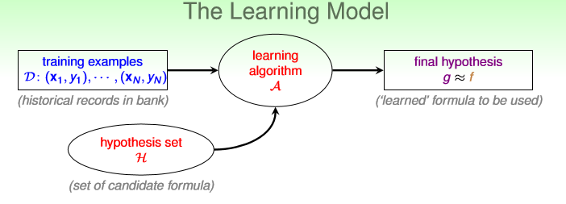
Types of Machine Learning¶
Output Space¶
(要問什麼問題)
| Binary Classification | Multiclass classification | Regression | Structured Learning |
|---|---|---|---|
| 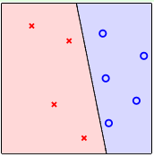 | 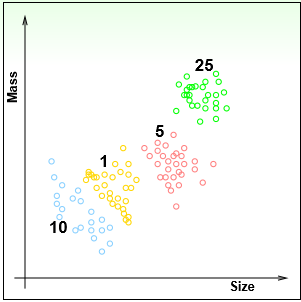 |  |
Data Label¶
(拿到不同標記的資料,要怎處理)
| Supervised | Semi-supervised |
|---|---|
| Sample:Classification 已經標記好資料 又可分成生成模型(Generative Model) 判别模型(Discriminative Model) | 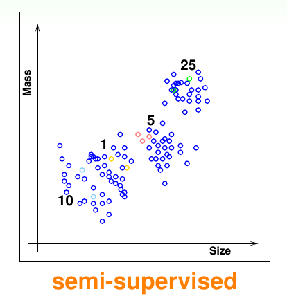 |
| Unsupervised | Reinforcement Learning (增強式學習) |
|---|---|
| Sample: Clustering 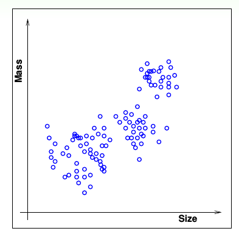 clustering(分群)density estimation:哪些地方比較稠密應用ex.哪裡比較常發生事故outlier detection:找出異常的資料,因為異常資料很少 |
跟訓練寵物一樣,對給獎勵,錯給懲罰 |
Protocol¶
輸入資料的方法f \Longrightarrow (x_{n},y_{n})
| batch | Online | active |
|---|---|---|
| 成批的資料來學習 | 一筆一筆資料來學習,遇到錯誤在改正ex.PLA,Reinforcement Learning | 機器自己問問題,當資料很少或很貴可以使用,也希望機器學習速度加快跟人一樣ex.機器自己寫一個數字,反過來問人來學習 |
Input Space¶
資料種類\mathcal{X} 越抽象的資料電腦越難學習
Sample
Mnist使用Multilayer perceptron 是使用raw pixel資料 準確度91% Mnist使用CNN準確度大約98~99% 由此可知當Raw的資料變成Concrete電腦就能學得越來越好
| Concrete(包含人類智慧) | Raw | abstract(最抽象) |
|---|---|---|
| 資料裡面有人類的智慧,有預先處理的資料,範例:辨識1跟5 用人腦寫下規則到底這張圖有沒有對稱或是密度如何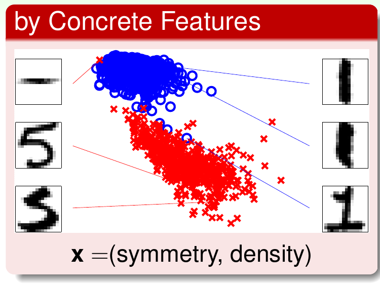 | 原始的資料,音訊,bit,pixel,範例:直接輸入pixel,但pixel沒有人類智慧只是單純的數據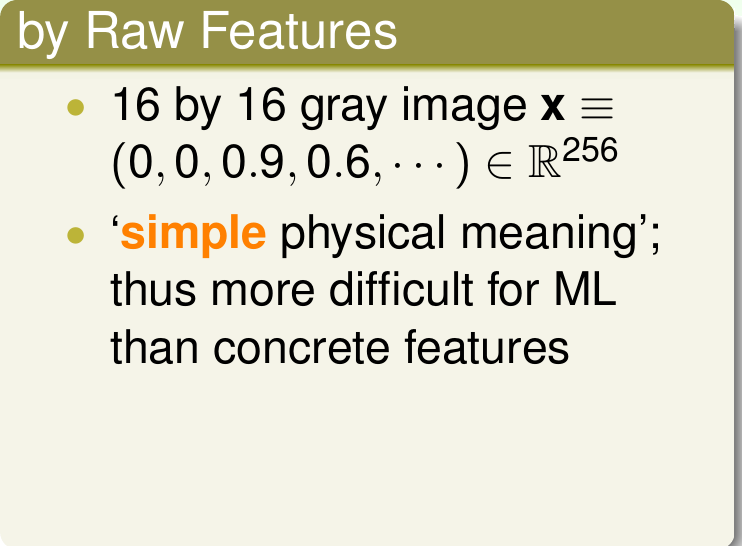 | 抽象的資料ex.使用者id編號 |
評估機器學習演算法¶
Question
到底機器學習從資料裡面能不能學到東西並且預測？
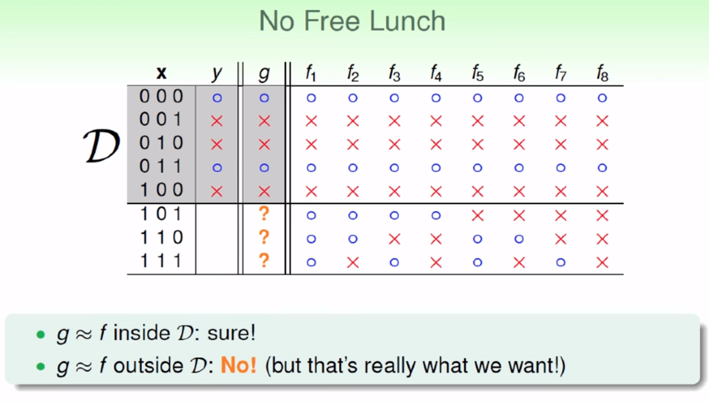
- g:機器學習學到的方程式
- f:夢想求出的方程式
"目前"看起來機器學習無法從資料來預測未知
雖然在已看過得資料內g=f,但是未看過的資料內無法保證g=f,所以"目前"只能說機器學習演算法可能學不到東西
Hoeffding's inequality基本概念¶
這裡以彈珠做舉例
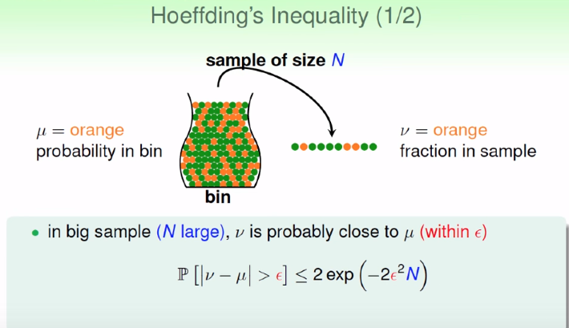
Summary
抽一次\mu 跟 \nu誤差超過\epsilon的機率很低,Hoeffding's inequality能說明該機率有多低
符號解釋¶
\mu alway unknow
For example ,when we count the winning percentage of the presidential election, It is impossible to sample the "entire nation"(\mu)
- N=抽出多少個
- \nu=橘色機率在N中
- \mu=橘色的機率占全部通常未知
- \epsilon=\nu跟\mu的誤差
- g:接近真實f的演算法(函數)
- f:夢想得到的演算法(函數)
- h:g選出的Hypothesis
固定\epsilon,一次抽越多樣本\epsilon誤差機率越小
固定N,\epsilon誤差越大的機率越小
證明!抽出的越多N越大\nu跟\mu越接近
\nu和\mu大概差不多是對的,在\epsilon容忍誤差內
-
probably:大概
-
approximately:差不多
練習題¶
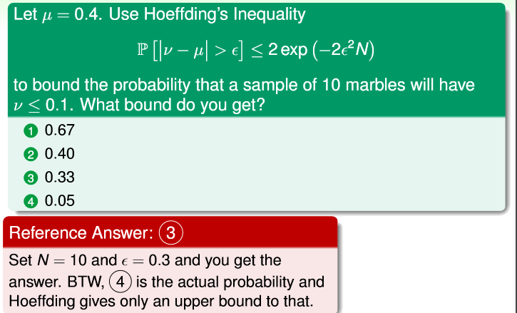
Hoeffding's inequality應用在機器學習¶
\nu \Longrightarrow E_{in}(h)
\mu \Longrightarrow E_{out}(h)
符號解釋¶
- E_{in}(h):在已知的資料內,該演算法目前犯錯的機率(越小準確率越高)
- E_{out}(h):該演算法在"全部"資料(上帝視角)內犯錯的機率(同常未知)
- N:資料數量
- M:Hypothesis假說的數量
- \color{red}{Bad}:E_{in}跟E_{out}誤差大於\epsilon的情況
單一Hypothesis¶
Summary
用途:確認該Hypothesis好不好 h\approxf
接下來會改寫剛剛的基本概念,改寫成這個公式 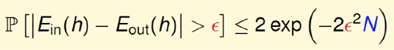
Hypothesis說明當我只有一個h（Hypothesis）,從這麼多個D抽到\color{red}{Bad}的機率小於等於2e^{-2\epsilon^{2}N}
D_{n}:每次抽出的資料 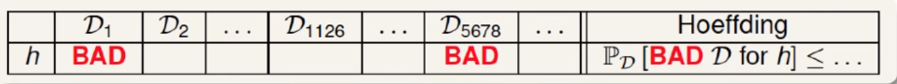
顯示數學¶
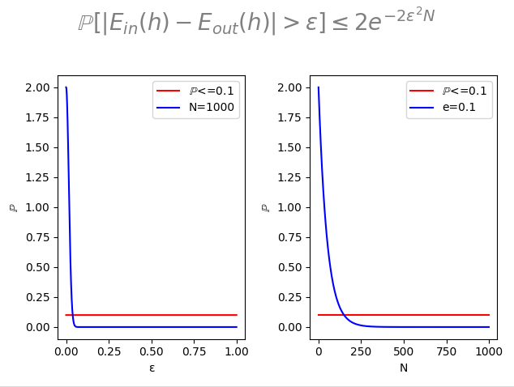
Code
import numpy as np import matplotlib.pyplot as plt import matplotlib.patches as mpatches fig = plt.figure() fig.suptitle(r'$\mathbb{P}[|E_{in}(h)-E_{out}(h)|>\epsilon]\leq2e^{-2\epsilon^{2}N}$',fontsize=20,color="gray") #FIG1 plt.subplot(1, 2, 1) N=1000 e=np.arange(0,1,0.00001) y= 2*np.exp((-2*e**2)*N) for i in y: if i<0.1: print(i) plt.plot(np.arange(0,1,0.00001),i*np.ones(len(np.arange(0,1,0.00001))),"r-",label=r"$\mathbb{P}$<=0.1") break plt.xlabel("ε") plt.ylabel("$\mathbb{P}$") plt.plot(e,y,color='b',alpha=1,label="N="+str(N)) plt.legend() #FIG2 plt.subplot(1, 2, 2) e=0.1 N=np.arange(0,1000,1) y= 2*np.exp((-2*e**2)*N) for i in y: if i<0.1: print(i) plt.plot(np.arange(0,1000,1),i*np.ones(1000),"r-",label=r"$\mathbb{P}$<=0.1") break plt.plot(N,y,"b-",label="e="+str(e)) plt.legend() plt.xlabel("N") plt.ylabel("$\mathbb{P}$") plt.tight_layout() plt.subplots_adjust(top=0.8) plt.show()
練習題¶
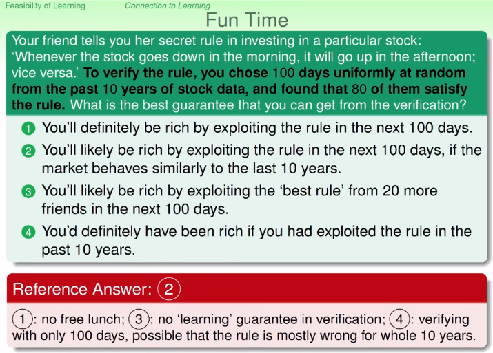
題目：你的朋友發現一個股市的規則"當早上上漲 下午就下跌",為了確認這條規則你就從過去十年資料裡面抽出100筆資料,發現80筆是正確的,什麼結論你可以說?
1.藉由利用該規則在未來的100天賺錢,你"肯定"將會變成有錢人(不能這麼肯定)
2.當未來100天股市走勢與十年以來的歷史資料很接近,利用該規則在未來的100天賺錢,你"很可能"會變成有錢人(正確)
3.藉由從20個朋友裡面選一個最好的規則,來當作投資未來100天股市的方法,你很有可能變成有錢人(錯！因為Hypothesis只有一個（"當早上上漲 下午就下跌"）不能選擇)
4.你肯定會變有錢人,如果你以前就使用該規則(錯 因為你只是抽出100天來做分佈,搞不好十年來的資料分佈很不一樣)
多個hypothesis set¶
Summary
用途：當hypothesis有限,可以確認該機器學習演算法好不好
推導¶
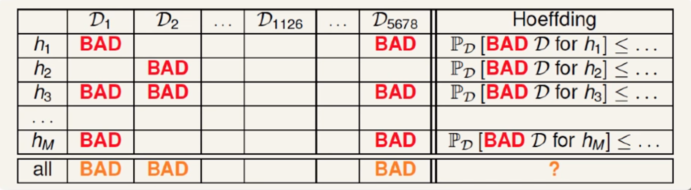 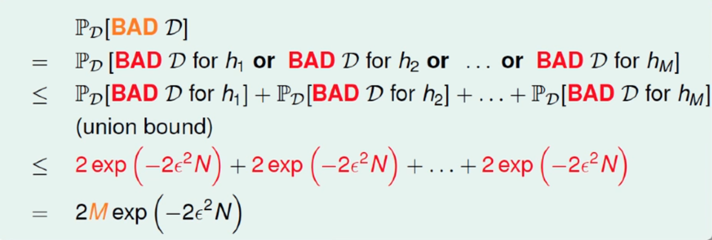
可以設定hypothesis set有多少 可以計算出當你的hypothesis set越大 N就要越大,資料才會準確
顯示數學¶
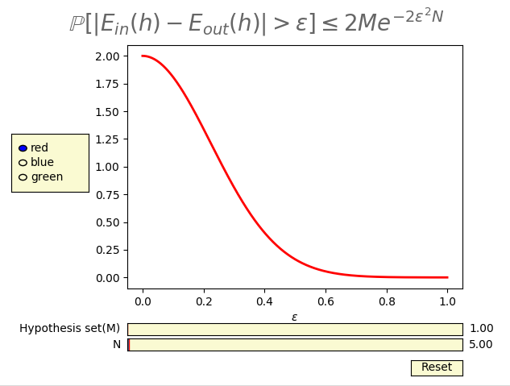
Code
import numpy as np import matplotlib.pyplot as plt from matplotlib.widgets import Slider, Button, RadioButtons fig, ax = plt.subplots() #equation title plt.xlabel('$\epsilon$') fig.suptitle(r'$\mathbb{P}[|E_{in}(h)-E_{out}(h)|>\epsilon]\leq$2$Me^{-2\epsilon^{2}N}$',fontsize=20,color="black",alpha=0.6) plt.subplots_adjust(left=0.25, bottom=0.25) hypothesis=1 #set how many hypothesis set x = np.arange(0.0, 1.0, 0.001) a0 = 5 s=2*hypothesis*np.exp((-2*x**2)*a0) l, = plt.plot(x, s, lw=2, color='red') #plt.axis([0, 1, -10, 10]) axcolor = 'lightgoldenrodyellow' axamp = plt.axes([0.25, 0.09, 0.65, 0.03], facecolor=axcolor) samp = Slider(axamp, 'N', 0.0, 1000.0, valinit=a0) hy = plt.axes([0.25, 0.13, 0.65, 0.03], facecolor=axcolor) hy_ok = Slider(hy, 'Hypothesis set(M)', 0.0, 1000.0, valinit=hypothesis) def update(val): amp = samp.val hyy=hy_ok.val l.set_ydata(2*hyy*np.exp((-2*x**2)*amp)) fig.canvas.draw_idle() samp.on_changed(update) hy_ok.on_changed(update) resetax = plt.axes([0.8, 0.025, 0.1, 0.04]) button = Button(resetax, 'Reset', color=axcolor, hovercolor='0.975') def reset(event): hy_ok.reset() samp.reset() button.on_clicked(reset) rax = plt.axes([0.025, 0.5, 0.15, 0.15], facecolor=axcolor) radio = RadioButtons(rax, ('red', 'blue', 'green'), active=0) def colorfunc(label): l.set_color(label) fig.canvas.draw_idle() radio.on_clicked(colorfunc) plt.show()
Conclusion¶
Note
\mathbb{P}[|E_{in}(h)-E_{out}(h)|>\epsilon]\leq2Me^{-2\epsilon^{2}N} If Machine Learning algorithm's Hypothesis is finite and N is large enough ,we can say E_{out}(g)\approx E_{in}(g) so we proof we can learning
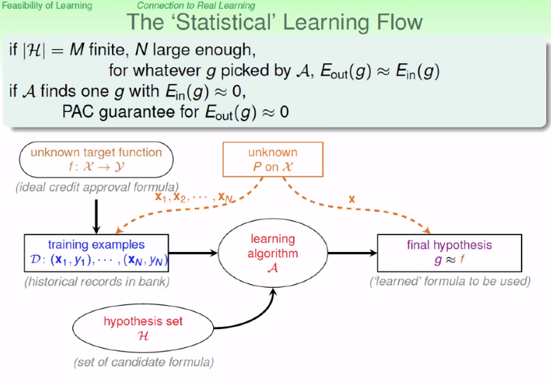
Question
If Hypothesis is infinite what happen?
練習題1¶
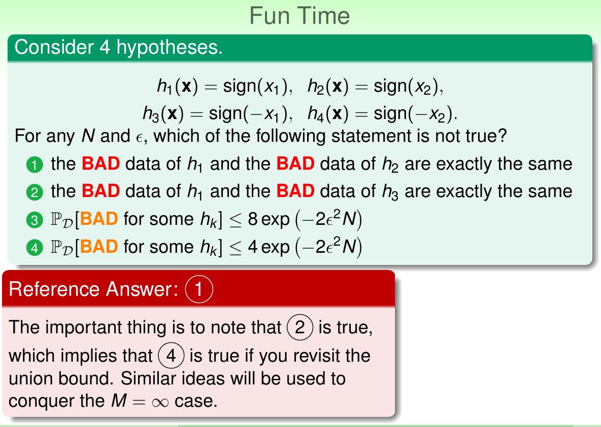 題目:請選出錯誤的
1.因為x_{1}跟x_{2}不同所以h_{1}跟h_{2}不同
2.雖然h_{1}跟h_{3}輸入不完全一樣但是因為只差正負號所以裡面資料的比例還是一樣
3.按照題目來說hypothesis有四個帶入公式就如題
4.但是由於資料正負的關西h_{1}=h_{3},h_{2}=h_{4}所以扣掉重複的部份,hypothesis剩下兩個所以該題也正確（之後會利用刪去重複的部份來求出當遇到無限個hypothesis時該怎麼解決）
練習題2¶
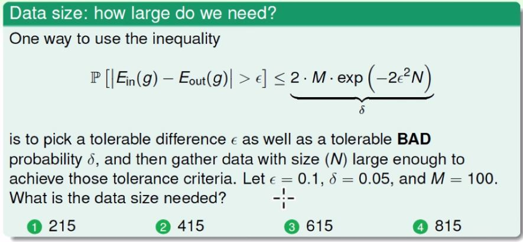
題目:要符合E\tiny{in}和E\tiny{out}誤差超過0.1(\epsilon)的機率小於等於0.05(\delta)hypothesis set有100個(M)我的N最少要幾個
\tiny{out}
\frac{1}{2 \epsilon^2}
$ N= \frac{1}{2 \epsilon^2}ln \frac{2M}{\delta} $ 答案為2
遇到無限Hypothesis的問題¶
PLA演算法的hypothesis set有無限多所以怎麼辦?
因為在平面上有無限多條線所以pla的hypothesis set有無限多個那該怎計算?
因為有許多重疊的hypothesis set
底下把hypothesis set用dichotomy來替換,因為hypothesis set無限多無法計算
以PLA舉例:
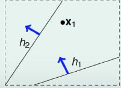
- hypothesis set 所有可能的線(以上圖來說有無限多種來分開一個點)
- dichotomy 資料分群的方法(有兩種方法上圖的兩條線)
所以要算出真正的成長函數需要用到機率的知識
-
\tiny{H}(N):dichotomy
-
break point:第一次有發生"全部"無法解決的N(只要找到一個排列都可以解決就不是breakpoint)
break point 計算方法
例如perceptrons
-
這個形狀下的排列每個都可以用一條線分開所以breakpoint不是3
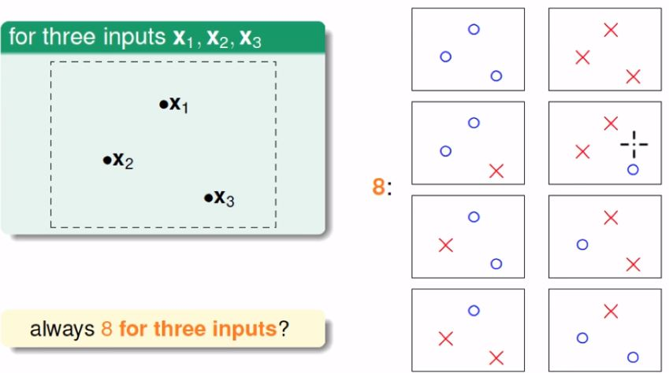 -
這個形狀下發生無法用線分開,其他形狀也發生無法全部分開所以breakpoint為4
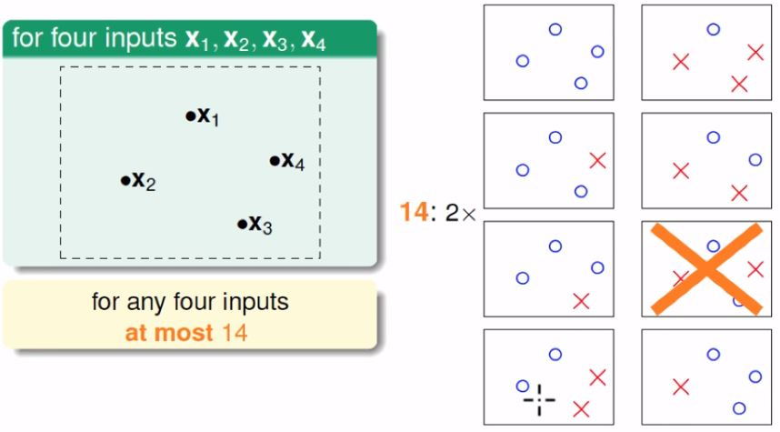
| m\tiny{H}(N)=O(N^{breakpoint-1}) | positive rays | positive intervals | convex | 2D perceptrons |
|---|---|---|---|---|
| m\tiny{H}(N) | N+1 =O(N) | \frac{1}{2}N^2+\frac{1}{2}N+1=O(N^2) | 2^N | O(N^3) |
| break point | 2 | 3 | None | 4 |
最後如果要用dichotomy取代hypothesis set
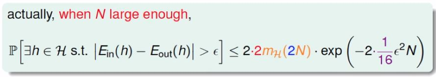
證明上圖